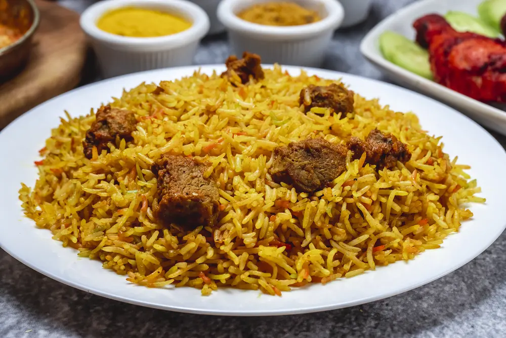

Pilau Beef

Description
Pilau beef is a delicious and aromatic dish made with seasoned beef and fragrant rice. It is known for its deep brown color and rich aroma, which comes from a
special blend of warm spices like cloves, cardamom, and cinnamon.
Unlike many rice dishes, the magic of Pilau lies in the browning of the onions
and meat. This process infuses every grain of rice with a savory, spicy flavor
that makes it perfect for celebrations or a cozy family dinner.
Ingredients
- 1 lb beef, cut into cubes
- 2 cups basmati rice
- 1 large onion, finely chopped
- 2 cloves garlic, minced
- 1 tsp ground cumin
- 1 tsp ground coriander
- 1/2 tsp ground cinnamon
- 1/2 tsp ground cardamom
- 1/4 tsp ground cloves
- 2 tbsp vegetable oil
- 4 cups beef broth
- Salt and pepper to taste
Instructions
- Rinse the basmati rice under cold water until the water runs clear. Drain and set aside.
- In a large pot, heat the vegetable oil over medium-high heat. Add the chopped onions and sauté until they are golden brown.
- Add the minced garlic and cook for another minute until fragrant.
- Add the beef cubes to the pot and brown them on all sides.
- Stir in the ground cumin, coriander, cinnamon, cardamom, and cloves. Cook for a couple of minutes to toast the spices.
- Add the beef broth to the pot and bring it to a boil. Reduce the heat to low, cover, and let it simmer for about 45 minutes, or until the beef is tender.
- Once the beef is tender, add the rinsed rice to the pot. Stir well to combine.
- Cover the pot and cook on low heat for about 20 minutes, or until the rice is cooked and has absorbed all the liquid.
- Fluff the rice with a fork and season with salt and pepper to taste. Serve hot and enjoy!
Back to Home